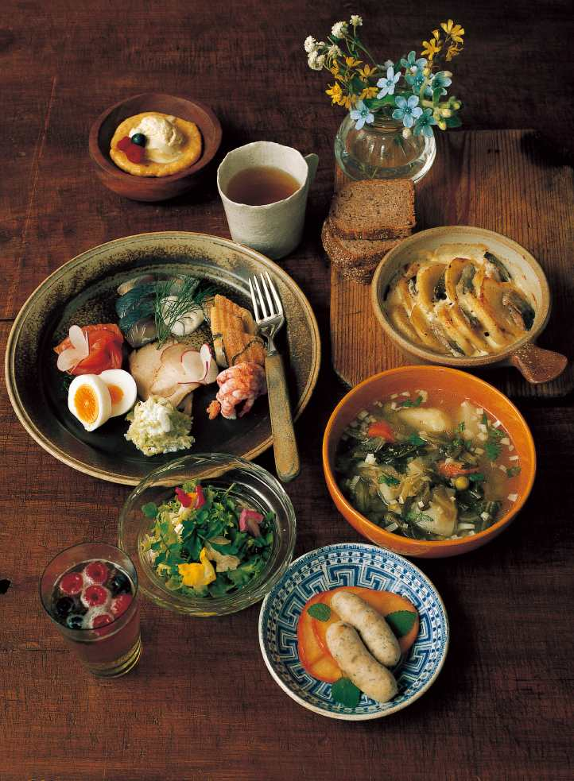
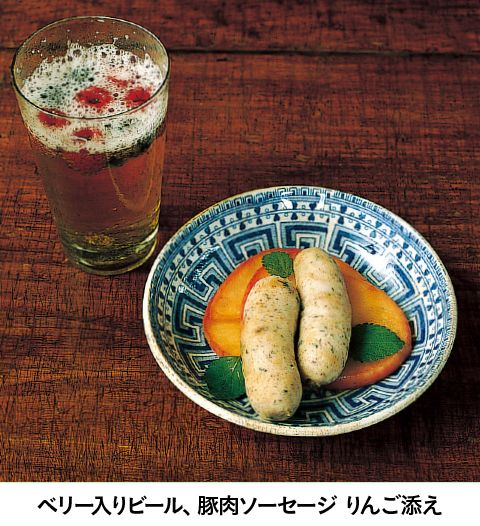

| 迷宮レストラン 第４巻 | |
| 河合 真理 | |
| (2006) | |
ＮＨＫ出版
迷宮レストラン 第４巻
河合真理
このレストランのコンセプトは、事前にお迎えする方の情報を収集した上で、毎回、ただ一人のお客様のために、お好みに合わせた料理をご用意することです。
食材については、それぞれの時代、土地に存在していると思われるものの中から選び、調理道具に関しても可能なかぎり実在していたものに近づけて使用することを前提にして、すべてのレシピを作っています。
なかには個々の時代や土地に実在するレシピをそのままに再現しているものもありますが、ほとんどの料理は、資料から得られた情報を参考に、シェフが考案創造したレシピですので、その点はご了承ください。
あるとき私は、子供のころから憧れていた人物、スペインの建築家ガウディの伝記を読んでいて、彼が何を食べていたのだろうと気になりはじめました。そして、資料を集めて調べているうちに、あっという間に夢中になってしまいました。
誰にとっても、食べるということはごく日常的に行われている行為です。それゆえ、食事に対する考え方は、その人の生まれ育った環境や、人生観が無意識に映し出されていくものだと思うのです。
例えば、ナポレオン１世。眠る時間さえ惜しんだ彼にとって、食事もまた出来れば省略してしまいたい通過儀礼の一つに過ぎなかったのではないでしょうか。また、レオナルド・ダ・ヴィンチは自身の思想や美学に従って、健康的でバランスのとれた理想的な食生活を実現していました。先にあげたアントニ・ガウディにとっては、退廃に誘うすべての欲望を回避し、ストイックに自己実現をしていくための要素の一つとして食があったのかもしれません。ダーウィンにとっては学びの場として好奇心を満たしてくれるものであり、ファーブルにとっては、洗練された楽しみの場であったように思います。
資料を読みあさるにつれて、私の中で彼らの姿が現実味を帯びていくようになり、それに伴い、「この素材をこう料理したら、この人は喜んでくれるかもしれない」「こんな料理を食べてくれたら、もう少し体調がよくなったかもしれない」などと考えるようになっていました。資料にある未知の食材や調理法にふれてみたいという気持ちも手伝って、具体的なレシピが次々と頭に浮かぶようになってきたのです。
そんなことから、今回、この迷宮レストランを開店する運びとなりました。
さて、ただいまから、迷宮レストランがオープンいたします。お料理とともに、時空の旅をごゆっくりお楽しみください。
迷宮レストラン・オーナーシェフ 河合 真理
 まえがきに代えて
まえがきに代えてデザイン 中嶋香織
イラスト 古屋亜見子
撮影 長嶺輝明
スタイリスト 西村千寿
校正 井口泰子
この本のレシピで使用している計量カップはカップ１＝２００㎖、計量スプーンは大さじ１＝15㎖、小さじ１＝５㎖です。
デンマークの童話作家の思い出の食卓
アンデルセンはデンマーク、フェーン島のオーデンセという町の貧しい靴職人の息子として生まれました。
デンマーク料理といえばライ麦パンを使ったデンマーク式のオープンサンド、スモーブルー（スミュアブローズ）が代表的です。具材としてよく使われるのは、鰊などの青魚やサーモン、小えび、豚肉、また、じゃがいもを中心とした野菜類です。いずれも、クリームやバター、チーズ、ホワイトソースなどの乳製品がたっぷりと添えられています。アンデルセンは劇場の満員の客席を見て「皆がバターだったらどんなにたくさん食べられるだろう」と言ったそうです。デンマーク人の乳製品好みを象徴するような逸話ですが、貧しく育ったアンデルセンにとっては、バターやクリームなどは贅沢品で、その想いが募っていたのでしょう。彼の『眠りの精のオーレおじさん』という童話の中でも、眠りの精は甘いミルクを目の中に注いで優しく眠りに誘い込んでいます。また、くせのあるライ麦パンも、たっぷりとバターをのせると、それだけでとびきり美味しくなります。乳製品はカロリー源としてだけでなく、デンマークの素材との相性の意味からも欠かせないものなのでしょう。
彼の自伝の中には故郷オーデンセで採れるベリーやすぐりのことが書かれています。ベリーで造られるワインもあり、果物の少ない北国ではベリーは欠かせぬ食材でした。また、「飲み物といえば、まずはビール、その次がミルク、水」といわれているほどデンマーク人はビール好きで、種類も豊富にあります。
ところで、アンデルセンの実像ですが、憧れていたイギリスの作家ディゲンズの家を訪れた際、家族全員に嫌われているのに気づかず、平気で長逗留していたり、好きな女性には一方通行でことごとく振られたりと、どこか子供っぽく夢見がちな、ちょっとイライラさせられる男というのが、伝記を読んでの感想です。
今回の料理では、デンマークの食材、よく旅をしていた彼の旅先での経験や恋（失恋）の思い出を交じえながら、彼の書いた物語の要素をできるだけ取り入れ、物語のような食卓をイメージしてみました。

｜シェフによるメニュー説明｜
飲み物──ベリー入りビール
デンマークでポピュラーな三つの食材、ベリーと蜂蜜、ビールを使って飲み物を作りました。ベリーに蜂蜜をかけてしばらくおいたものにビールを注いで、少し甘くてコクのあるビールを作りました。
前菜──豚肉ソーセージ りんご添え
生まれ故郷のオーデンセで初めて歌劇を見たときのこと、アンデルセンは感激のあまり、泣き出してしまいました。そのとき、隣席のご婦人が「これはお芝居なのですよ......」と声をかけ、ソーセージとパンを差し出したそうです。アンデルセンは本当に純情な方なのですね。
そんなエピソードから、本日はデンマークの主要食材である豚肉をミンチにし、ハーブをたっぷり加えたソーセージを用意しました。また、アンデルセンは憧れのイギリス人作家ディケンズの家を訪問したときの思い出として、庭にあるりんごの木のことを書いています。そこでりんごを白ワインで煮て添えました。

スープ──キャベツとえんどう豆のスープ
デンマーク料理にあるキャベツのスープに、アンデルセンが書いた『さやから飛び出した五つのえんどう豆』にちなみ、えんどう豆を加えて煮込みました。
キャベツとえんどう豆のスープ
材料（４人分）
キャベツ３枚、グリンピースカップ 、豚ロース肉（塊）５００ｇ、にんじんの葉２本分、ローリエ１枚、じゃがいも２個、にんじん本、かぶ２個、リーキ（なければねぎ）10cm、イタリアンパセリ３本、塩・胡椒各適量
、豚ロース肉（塊）５００ｇ、にんじんの葉２本分、ローリエ１枚、じゃがいも２個、にんじん本、かぶ２個、リーキ（なければねぎ）10cm、イタリアンパセリ３本、塩・胡椒各適量
作り方
１ 豚肉に塩大さじ１と胡椒少々をよくもみこみ、密封容器に入れて冷蔵庫に１日おく。
２ 大きめの鍋に１と水１ℓ強を入れ、にんじんの葉、ローリエを加えて45分間ほどゆで、アクや脂が出たら除いてそのまま冷ます。
３ ２から肉を取り出す（肉はゆで豚として別に使う）。
４ ３のゆで汁にザク切りにしたキャベツ、皮をむいて乱切りにしたじゃがいも、にんじんを加え、煮立ったら弱火で40分間煮る（途中、水分が減ってきたら適宜足す）。
５ ４にグリンピース、皮をむいたかぶを加え、さらに20分間煮る。
６ ５にみじん切りにしたリーキとイタリアンパセリを加え、塩・胡椒各少々で味を調える。
メイン──オープンサンドイッチ
オープンサンドイッチもデンマーク料理には欠かせない一品です。アンデルセンの70歳の誕生日を祝う晩餐会のメニューにも入っていました。本日は、ディルでマリネしたサーモン、酢漬けにした鯖、塩ゆでの小えび、鰻と豚ロースのスモークを用意しました。レモン、ゆで卵、キャベツのサワークリーム漬けを添え、ヨーグルトと生クリームを合わせて作ったさっぱり味のサワークリームをのせました。
オープンサンドイッチ用サーモンのディル漬け
材料
生鮭２００ｇ、ディル１束、粗塩大さじ１弱、てんさい糖小さじ２、粒白胡椒適宜、レモン適宜
作り方
１ 鮭は２等分に削ぎ切りにする。ディルは３等分くらいに切る。
２ 胡椒は粗くつぶし、てんさい糖、塩を合わせる。
３ 容器に２を 量ほど入れ、皮を下にして１の鮭を１枚入れ、身の上に同量の２をかけてディルを全量のせ、さらに鮭をのせて残りの２をのせる。
量ほど入れ、皮を下にして１の鮭を１枚入れ、身の上に同量の２をかけてディルを全量のせ、さらに鮭をのせて残りの２をのせる。
４ 約５００ｇのおもしをのせ、１晩ねかせて、出てきた汁を全体にかけ、裏返して２日ほど漬ける。
５ 漬けた鮭の身を薄く削ぎ切りにして、レモンを添える。
※好みでマスタード、サラダ油、塩、胡椒、砂糖を合わせたマスタードソースを添えてもよい。
──塩漬け鰊とじゃがいものグラタン
これもデンマークの伝統的な料理ですが、スライスしてサッと炒めたじゃがいもと塩漬け鰊（本日は北海道羽幌から生鰊を取り寄せて塩漬けにしました）にサワークリーム、生クリーム、塩、胡椒をしてオーブンでこんがりと焼きました。レシピはシェフの自己流です。
塩漬け鰊とじゃがいものグラタン
材料
鰊（小）３匹、じゃがいも３個、バター大さじ３、サワークリームカップ１、生クリームカップ１、塩・胡椒各適宜
作り方
１ 鰊はうろこを除き、３枚におろして塩大さじ２を全体にまぶし、出てきた水けをふいて冷蔵庫に入れ、半日以上おく。
２ じゃがいもは皮をむいて水にさらし、水けを切りバター大さじ３で両面を焼いて軽く、塩、胡椒する。
３ サワークリームと生クリームを合わせる。
４ 耐熱容器に残りのバターを塗り、１をスライスしたものと２のじゃがいもを並べて３を上から流して胡椒をふる。
５ 余熱した２００℃のオーブンで15分間ほど焼く。
──アンデルセン風サラダ
アンデルセンが友人に出した手紙に、サラダの作り方を記しているものがありました。その作り方にあるように、にんにくとフランスパンを加え、『即興詩人』の舞台であるイタリアのモッツァレラチーズ、アンデルセンが大好きだった花も食用のものを選んで加えました。
デザート──蜂蜜揚げパン ブルーチーズのアイスクリーム添え
アンデルセンのお話には「蜂蜜菓子」がよく出てきます。また、若いころ、美しい歌姫と恋に落ちたアンデルセンは、アツアツの揚げパンを２人で食べたことも記録に残っています。
アツアツの揚げパンに蜂蜜をたっぷりぬって、デンマーク産のダナブルーという青かびチーズで作ったアイスクリームをのせました。少しとけたところを召し上がってください。
揚げパン用ダナブルーのアイスクリーム
（※蜂蜜たっぷりのアツアツの揚げパンの上で溶かして食べるためのレシピなので甘さ控えめでチーズは多めになっている。そのまま食べる場合は、蜂蜜とチーズの量を加減する）
材料
卵黄２個、牛乳２５０㎖、ブランデー大さじ１、蜂蜜60ｇ、生クリームカップ１、ダナブルー＊１００ｇ
＊デンマーク産の青かびチーズ
作り方
１ 卵黄に蜂蜜の半量を加え、白くなるまで泡立てる。
２ 牛乳２００㎖と残りの蜂蜜を鍋に入れ、火にかけて沸騰する直前まで温めてブランデーを加え、火を止める。
３ １に２を少しずつ混ぜながら加え、ざるで漉す。
４ ３を鍋に入れて沸騰しないように火にかけ、ぽってりしてきたら火から下ろす。
５ ４をボウルごと氷水にあてながらかき混ぜ、冷ます。
６ 別のボウルに生クリームを入れて七分立てにする。
７ ダナブルーをちぎり、残りの牛乳とともに鍋に入れ湯煎してクリーム状にする。
８ すべてを合わせて容器に入れ、冷凍庫で２～３時間固め、その間、固まりかかったら大きくかき回す。これを３回繰り返す。
飲み物──にわとこ茶
『にわとこおばさん』という心温まる物語にちなんで、体がポッカポカになる、にわとこ茶（漢方では接骨にきくそうです）を用意しました。
進化論者が食べたもの
ダーウィンは大学で医学と神学を学んでいますが、その学生生活の実態は、勉強よりも生き物の観察と収集に熱中していたようです。
また、大学時代にダーウィン自身が主宰者となり「食いしん坊クラブ」なるものを設立しています。主旨は「人間の食卓に供されたことのないものを食べる」というクラブで、調理はカレッジのコックが好意でしてくれていました。メンバーは古くからの友人５人で構成されており、食後は必ずポートワイン等で締めくくる、誠に上品な紳士の集まりだったそうです。いったい、どんなものが食卓に上ったのか大変興味がありますが、詳しい記録は見つけられませんでした。わかっているのはある日、老いぼれたメンフクロウを食べてげんなりしてしまい、「もっと伝統的な食物に頼ることにしよう」と、クラブが消滅していったという経緯だけです。
さて、自費で生物調査の航海に出たダーウィンですが、航海中には必要に迫られ、アルマジロの肉等が食事に登場することもありました。他のメンバーが辟易するような食事も、ダーウィンは楽しんだのかもしれません。帰国後も研究に没頭し、もともと丈夫ではなかった彼は、無理がたたり、晩年は常に病気に悩まされ苦しみ続けました。しかし、最後は最愛の妻エマの腕の中で、彼女に心から感謝して亡くなったといいます。
今回のメニューは彼の人生の軌跡をたどるべく、生まれ故郷イングランドのその時代の料理、大学時代を過ごしたスコットランドの料理、そして、ビーグル号等で航海した際に発見した様々な事柄や研究材料、彼自身の趣味や愛読書などから素材を抜き出して構成しました。一つ一つの料理がダーウィンの日記の１ページのような気持ちで作りました。
ところで、私は今回、初めて小さな野鳥やすっぽんなどを料理しました。その中で「一つ一つの生命、まさしくその尊い命をいただいて我々は生きているのだ」とダーウィンに教えられた気がしました。山鶉はレバーとの組み合わせで、コクのあるパイ料理になりました。また、すっぽんの卵はねっとりと濃厚な黄身のかたまりといった感じで、コンソメの浮き身として少量加えると大変上等な一品になります。
｜シェフによるメニュー説明｜
飲み物──シャンパン
ビーグル号出航のときにも召し上がったというシャンパンを用意しました。
前菜──野菜のハギス仕立て
大学時代を過ごしたスコットランドには、ハギスという伝統料理があります。本来のハギスは、羊の内臓と肉、オーツ麦、スパイスを羊の腸に詰めるのですが、本日は、じゃがいも、豆をゆでてつぶし、オーツ麦、ワイルドライスを加え、セージ、ナツメグ、塩、胡椒で味付けして羊の腸に詰めて蒸し上げ、前菜としました。
野菜のハギス仕立て
※スコットランド名物のハギスをメニューに組み入れたいと思ったが、羊の内臓で作る料理なので、全体のバランスを考え、野菜を使って前菜用に仕立てた。
材料（４人分）
羊の腸（塩漬け）適宜、じゃがいも（小）３個、白いんげん豆カップ、ワイルドライス大さじ４、オーツ麦大さじ４、ナツメグ少々、ドライセージ少々、塩・胡椒各適宜、
作り方
１ 羊の腸は水につけて塩抜きしておく。
２ じゃがいもは柔らかく蒸し、皮をむいてつぶす。いんげん豆は１度ゆでこぼし、柔らかくゆでて水けをきり、熱いうちによくつぶす。
３ ワイルドライス、オーツ麦はゆでる。
４ ２にしっかり水けを切った３とスパイスを加え塩、胡椒する。
５ じょうごなどの下の部分に１の腸をかぶせて上から具材を入れられるようにたぐり寄せ、末端を結ぶ。
６ じょうごの上から４を押し込みながら詰め、適度な長さにまで詰まったら、ねじって結ぶ。これを繰り返す。
７ ６を適当なところで切り、蒸し器で蒸す。
※腸に詰める際、絞り器等を使ってもよい。
前菜──鴨のロースト マンゴーソース
旅の途中で食べたアルマジロの肉は、見た目も味も鴨にそっくりだったそうです。鴨を赤ワイン、香味野菜、塩、胡椒でマリネしてローストしました。南の島で味わったというマンゴーにオレンジリキュール、レモン汁を加えてフレッシュソースとし、グリーンペッパーを添えました。
スープ──すっぽんのコンソメ仕立て
ガラパゴス諸島にいたときによく食べたのが亀ということですが、『種の起原』の挿絵にすっぽんによく似た亀がありましたので、すっぽんをコンソメ仕立てにしました。浮き実はすっぽんの卵とゼラチン質のエンペラ（甲羅の縁の下側の出っ張り）です。
すっぽんのコンソメ仕立て
材料（４人分）
すっぽん１匹、たまねぎ（丸のまま）１個、クローブ２個、にんじん（丸のまま）１本、セロリ（長さを半分に切る）１本、ポロねぎ（長さを半分に切る）１本、Ａ〔白ワインカップ１、ブーケガルニ（パセリ・ローリエ・タイム）１束、にんにく２かけ、黒胡椒（粒）５粒〕、ブランデー大さじ３、塩・胡椒各適量
作り方
１ さばいたすっぽんは水につけて血抜きし、卵があれば取り出して、サッと湯通しして臭みを取る。
２ 鍋に卵以外の１とクローブを刺したたまねぎ、Ａを入れ、ヒタヒタに水を加えて火にかける。
３ 煮立ったら、アクを取りながら弱火で３時間ほど煮込む。漉し器で漉し、エンペラを取り分けて刻む。
４ 漉したスープにブランデーを加え、塩・胡椒各少々で味を調える。一部は冷やしてゼリー状にする。
５ 小鍋に４のスープカップに塩少々を加えたものを入れ、煮立ったら１の卵を入れて30秒間ほど煮る。
６ 器に４のゼリー状のスープを入れ、温めたスープを注ぎ、５の卵と３のエンペラを浮かべる。
メイン──山鶉のパイ
ダーウィンと同時代のヴィクトリア女王は、毎年、１００羽の山しぎを使ったパイをクリスマスに召し上がったとか。本日は狩猟が趣味であったダーウィンがよくしとめた山鶉をパイに仕立てました。
山鶉のパイ
材料（作りやすい分量）
パイ生地〔小麦粉２５０ｇ、無塩バター１２５ｇ、卵（小）１個、塩小さじ１〕、山鶉１羽または灰色しゃこ１羽、鶏レバー１５０ｇ、ベーコンスライス３枚、マッシュルーム５個、エシャロット１個、バター大さじ３、Ａ〔たまねぎ個、セロリ１本、ローリエ１枚、白ワインカップ〕、Ｂ〔オレンジの皮（すりおろす）個分、シナモンパウダー少々、クローブパウダー少々、エストラゴン（みじん切り）小さじ１〕、マデイラ酒カップ、Ｃ〔小麦粉大さじ２、バター大さじ３〕、Ｄ〔パン粉大さじ４、卵黄１個分、生クリーム大さじ２〕、サワークリーム大さじ４、塩・胡椒各適量
作り方
１ パイ生地を作る。小麦粉と塩を混ぜる。冷やしたバターを小さく刻む。
２ １の小麦粉にバターを加え、指でつぶしながら全体になじませる。
３ ２に約半量の卵を少しずつ入れ、フォークの背で混ぜる、全体を手でまとめ、丸く整えてオーブンペーパー等で包み冷蔵庫で１時間冷やす。
４ 山鶉は毛を除き、頭を落とし、レバー以外の内臓は除く。肉と骨に分ける。
５ ４の骨はサッと洗い、Ａとともに鍋に入れ、水をかぶるくらいに入れて火にかけ、煮立ったらアクを取り、弱火にして塩、胡椒して30分間くらいうまみが出るまで煮てスープをとる。
６ ベーコン、マッシュルーム、エシャロットは粗みじんに切り、血抜きをした鶏レバーと鶉レバー、山鶉の肉は食べやすく切って、バターで炒める。
７ ６にＢを加えて塩、胡椒し、味を調えて５のスープカップ１とマデイラ酒を加えて煮る。
８ ７にＣを手で混ぜ合わせたものを加え、ひと煮立ちしたらＤを混ぜたものを加え、とろりとしてきたらサワークリームを加え、味をみて塩、胡椒する。
９ ３のパイ生地を、型に合わせてのせて切り、冷ました８をのせ、残りの生地でふたをして、上に切り込みを入れる。パイ生地の残りの卵の卵黄部分を上に塗る。
10 １９０℃のオーブンで45分間くらい、生地に火が通るまで焼く。
サラダ──かにのコールスロー
長い間研究していたふじつぼは、実はかにやえびの祖先だったということで、かに肉とキャベツをレモン汁でマリネしてさっぱりしたコールスローにしました。南の国の思い出にココナツの実で風味をつけました。
パン──りんごとレーズンのライ麦パン
ビーグル号での航海中、ミルトンの『失楽園』のポケット版をいつも持ち歩いていたとのこと。この中で具体的な名前で登場する二つの果物、りんごとレーズンを入れてライ麦パンを焼きました。
デザート──シラバブ
シラバブはイングランドの伝統的なデザートです。当初はエールと牛乳で作られていましたが、ここでは白ワイン、レモン汁、粉砂糖に少しずつ生クリームを加えてふんわりと攪拌し、一晩おいた18世紀以降のレシピにしました。蘭の栽培も趣味にされていたので、蘭に似たエディブルフラワーを添えました。
──ウイスキーティー
お酒はお付き合い程度でしたが、ウイスキーティーだけは風邪の予防によく飲んでいたようです。スコッチをたっぷり注いだ紅茶は、ヴィクトリア女王のお気に入りでもありました。
昆虫学者の食へのこだわり
子供のころのファーブルは、血のほとばしる傷口を見て気を失い、危ういところで命を落としかけたほど繊細な少年でした。大人になってからも、家庭で肉を食べることは一切なく、食生活の中心は野菜や果物、魚でした。
ただ、「コガネムシ詩人」の名で書き残している詩を読むと、ベーコンを讃える詩もありました。貧しく育った彼にとって少量でうまみを出すベーコンは、必要不可欠の食材だったのでしょう。そこで今回の料理では、スープに少量のベーコンを使用することにしました。
ファーブルの書庫には、古典文学作家の著書と同列に『美味礼賛』の著作で知られるフランスの食通ブリア・サバランの書いた料理研究書が並んでいました。また、食にこだわりを持って自ら料理もするファーブルは、アリストテレスが自分の研究材料でもある蟬の幼虫を「きわめて美味」と称賛しているのを知り、さっそく試したようです。「まるで羊皮紙のようで、この料理を人に勧めることはできない」と感想を述べています。ローズマリーやタイムの茂みに入り込み、暗くなるまで地べたに這いつくばって毎日昆虫を観察し続けるファーブルを見て、近所のおかみさんたちは頭がおかしいのだと誤解してしまい、同情して、手を合わせ神様にお祈りしてから通り過ぎていったという、今だからこそ笑えるような話も残っています。
彼がいかに繊細な感受性と舌の持ち主であったかは、ファーブルの書いた詩が物語ってくれます。
「この世に神様の野菜があるとすれば、それは絶対いんげんだ。いんげんはそれだけであらゆる長所をもっている。しなやかな歯ざわり、心地よいうまみ、豊富さ。その上廉価で滋養がある。おぞましさも血なまぐささもないけれど、（中略）肉に等しい植物の肉だ。」（ベカエール直美訳）
さて、メニューはファーブルの好みに合わせて野菜を中心にしたシンプルな料理を中心に、ブリア・サバランの著書を参考にしました。虫たちのかすかな羽音と、ハーブの香りを運んでくれる南仏の風を感じながら、食事をお楽しみください。
｜シェフによるメニュー説明｜
飲み物──シードル
ファーブルはワインが買えないほどの暮らしぶりのときもあり、時にはりんごをすりおろして粗糖と水で発酵させた粗製酒（ピケット）を作っていました。本日は、上等なりんごの発泡酒シードルを用意しました。
前菜──なすのマリネ てんとう虫見立て
愛読していたブリヤ・サバランの『美味礼賛』に、「トリュフは料理のダイヤモンド、アントレ（前菜）までに出すべき」と書かれています。南仏プロバンスはトリュフの産地ですので、トリュフを使い、トマト（中身はなすのマリネ）をてんとう虫に見立てています。
なすのマリネてんとう虫見立て
材料（４人分）
トリュフ（薄切り）３枚、トマト２個、ミニトマト（黄）２個、なす４個、エシャロット個、マリネ液（にんにく１かけ、酢80㎖、水80㎖、塩小さじ１、砂糖小さじ１、粒胡椒６粒、ローリエ１枚）、オレガノ１～２本、オリーブ油大さじ２、塩・胡椒各適量
作り方
１ トリュフを小さな円形に切る。
２ トマト２種は湯むきして４等分に切り、中をくりぬく。
３ なすは２個を焼いてヘタと皮を除く。残り２個のなすは皮をむいて８mm厚さに切り、塩をふって水けを出してから、マリネ液で透き通るまで煮、ざるにあけ、十分に水けをきる。焼いたなすとマリネしたなすを合わせて、包丁でたたいて刻み、みじん切りのエシャロットとオレガノ、オリーブ油を合わせ、塩、胡椒で味を調える。
４ なすを器に盛り、かぶせるようにしてトマトとトリュフをてんとう虫に見立てて飾る。
スープ──えんどう豆のポタージュ
ファーブルが残した数々の詩の中には、えんどう豆にたまねぎ、ベーコンを讃えた詩もありました。その３つの食材を使い、なめらかなポタージュにしました。
メイン──魚介のワイン蒸し
物理の教師としてコルシカに住んでいた際に、訪ねてきた博物学者を平目とうにでもてなしたと記録にありましたので、本日は平目をあさりのだしと白ワインで蒸し、後からのせて軽く蒸したうにをソース代わりにして召し上がってください。
サラダ──いんげん豆のサラダ
ファーブルの詩には、「この世に神様の野菜があるとすれば、それはいんげん」と書かれています。そのいんげん豆と、野外観察の際にいつもポケットに入れて持ち歩いていたというりんごを使い、たまねぎ、レモン、マスタード、赤ワインビネガー、フェンネルのドレッシングでマリネしました。
パン──ローズマリーパン
パンには、野外観察の場所であったタイムやローズマリーの茂みの香りを閉じ込めました。
デザート──バナナ・ア・ラ・ネージュ かまきりの卵見立て
マルセイユからファーブル家に届く荷物の中には、バナナがたびたび入っていたそうです。カスタードと少量の生クリームを合わせ、かまきりの卵をイメージしたゆでメレンゲを浮かべて、カラメルソースとオレンジリキュールで香りをつけました。
バナナ・ア・ラ・ネージュ かまきりの卵見立て
材料
カスタード〔卵黄３個分、牛乳２５０㎖、砂糖50ｇ、バニラビーンズ１本、グランマニエ大さじ１〕、メレンゲ〔卵白３個分、グラニュー糖少々〕、カラメル〔砂糖大さじ５、水大さじ１、生クリーム小さじ１〕、バナナ１本、生クリーム適宜、酢
作り方
１ カスタードを作る。牛乳と砂糖を鍋に入れバニラビーンズをこそいで加えて弱火にかけ、かき混ぜながら沸騰しないように砂糖を溶かす。
２ １をボウルに溶いた卵黄に少しずつ加え、泡立て器でよく混ぜる。
３ ２を鍋に入れて再び弱火にかけ、ヘラなどで混ぜ、とろみがついてきたらグランマニエを加えて混ぜ、粗熱をとって冷やす。
４ メレンゲを作る。卵白を泡立て、固くなったらグラニュー糖を加え、つのが立つまで泡立てる。
５ 鍋に水と酢少々を入れ、沸騰したら中火にし、４を玉じゃくし等ですくい、スプーンで形を整えながらそっと鍋に落として３分間ほどゆで、ペーパータオルの上にのせて水けをきり、冷ます。
６ バナナをつぶし、３と適量の生クリームを加えて混ぜる。
７ 器に６を入れて５をのせる。
８ カラメルの材料の砂糖と水を鍋に入れて火にかけ、飴状になったら生クリームを加えてソースにし、７にかける。
──胡椒チーズ、ヴァン・キュイ
好物であった濃縮葡萄酒（ヴァン・キュイ）に合わせて、牛乳とヨーグルトを混ぜ、一晩発酵させた軽いチーズに胡椒をまぶしたものを添えました。
飲み物──ブリヤ・サバラン風のコーヒー
こちらもブリヤ・サバランによる美味しいコーヒーのいれ方。豆を乳鉢に入れて木製の杵でつき、金属などの漉し器で漉していれるとあったので、その方法でコーヒーをいれました。
菜食主義者だったトルストイ
トルストイがベジタリアンだったのは有名な話ですが、狩猟を趣味にしていた若いころの食事についての記述もいくつか残っています。例えば、「冷やもの、イラクサのシチュー、かぶ、胡瓜添えの鶏肉、煮豚、焼き豚、胡瓜、そば汁、ピーナツ、蜂蜜、揚げパン、サワークリーム、コテージチーズ、馬乳、茶、ウオツカ」などです。
私はこの中にあるイラクサのシチューなるものがとても気になり、ぜひとも作ってみたいと思いました。イラクサは日本でも食用に用いられる山菜ですが、採取する人が減ってしまい、自然体系の変化も手伝って市場には出回らず入手困難になっています。捜索すること１年あまり、周囲の協力でようやく手に入れることができました。採る人が減ってしまった理由の一つは、その棘にあります。新芽以外には棘がたくさんついていて、その棘は刺さるといつまでもチクチクと痛み、細くて抜きにくいのです。もし刺してしまったら、その部分にセロハンテープを貼って抜くのが一番のようです。
さて、このイラクサのシチューは、トルストイが肉食をしていた時代のメニューなので、肉のブイヨンや肉そのものも使われていた可能性が高いのですが、今回はベジタリアン用のメインディッシュに仕立てました。イラクサ自体にはクセも強い香りもないので、香りの強い山菜類を加えて調理しました。他の山菜とともに炒めて、煮詰めるだけで独特のとろみが出てきますので、小麦粉などを加えることなくトロリとしたシチューになりました。
ベジタリアンになって以後のトルストイは、肉のことを「死体」と呼び、野菜スープ（スープ・プランタンエール）を毎日のように飲んでいたと妻が手記に書いています。このころの朝食のメニューは、コーヒーに乾パン、オートミール、フルーツ、ゼリージャム。夜は、米、じゃがいもすいとん、チーズ、馬乳など。そのほかには、黒パンや蜂蜜、レーズン等が随時加わっていました。また、青いキャベツ汁、クワス（黒パンを発酵させた飲み物）などの飲み物を飲んでいたようです。
今回のメニューは、菜食主義へと移行した晩年の食事を基本にしました。小説の中に出てくる料理や、飲み物を取り入れ、娘タチアーナの書いた父の思い出や最後まで不仲であった妻の書簡を参考にして選びました。厳格なまでに自らを突き詰め、ただ独り、小さな駅舎で天に召されたトルストイを想い、厳かな気持ちで作りました。
｜シェフによるメニュー説明｜
飲み物──牛乳酒
娘タチアーナの手記によれば、トルストイは一時期は過労のため健康を害し、馬乳酒療法をしていたそうです。馬乳は手に入りませんので、イーストで発酵させた牛乳酒を用意しました。
スープ──クワスのスープ仕立て
クワスはライ麦パン、りんご、蜂蜜、レモンなどに熱湯を加えて発酵させたロシア独特のさわやかな飲料水。トルストイの小説『生ける屍』の中には、「クワスに干し葡萄が入ってない」つまり「生活に遊びがない」という表現が出てきます。本日は、ライ麦パンを焼き、干し葡萄（レーズン）を入れて発酵させた自家製クワスを使い、胡瓜、かぶ、にんじんなどを軽く塩漬けしてトマトとともに加え、胡椒をふって、冷製のスープ仕立てにしました。
クワス
材料（作りやすい分量）
ライ麦パン１００ｇ、レーズン30ｇ、熱湯３ℓ、りんご 個、レモン個、ブラウンシュガー40ｇ、蜂蜜大さじ５
個、レモン個、ブラウンシュガー40ｇ、蜂蜜大さじ５
作り方
１ りんごは芯を取っていちょう形に切り、レモンは皮をむき薄くいちょう形に切る。
２ 消毒した瓶にすべての材料を入れて混ぜ、軽くふたをする。
３ ２を室温で３日間くらいおき、プツプツと発酵してきたら漉して冷やす。
クワスのスープ仕立て
材料（４人分）
かぶ１個、にんじん本、胡瓜１本、トマト（小）１個、たまねぎ（みじん切り）小さじ１、クワス６００㎖、塩・胡椒各適宜、ディル適宜
作り方
１ かぶ、にんじんは皮をむき、胡瓜はところどころ皮をむいて１cm角くらいに切る。
２ トマトは湯むきして、種を除いて１cm角に切る。
３ １に塩小さじをふり、しばらくおいてしんなりしたら余分な水けを絞り、サッと洗う。
４ ３と２、たまねぎのみじん切りを合わせ、ちぎったディルの葉とともにクワスに加え、１時間以上おく。味をみて塩、胡椒する。
前菜──キャベツとたまねぎのピロシキ
トルストイは若いころは猟もしたようですが、後年、殺生を大変嫌い、菜食主義者になっていきました。本日のピロシキは肉を使わず、キャベツとたまねぎを弱火で十分に炒めてコクと甘みを引き出し、フェンネルシードと胡椒で風味をつけて具にしました。
メイン──イラクサのシチュー
資料として残る食事メニューの中で、最も気になったのが「イラクサ」のシチューでした。イラクサは、以前は日本でも山菜として新芽を食していました。細かな棘が刺さってイライラするからイラクサというのだそうですが、その味はほとんどクセがありません。行者にんにくや、ぼう菜、あぶら菜などの山菜といっしょによく炒めて煮込み、くりぬいたジャンボマッシュルームに詰めてオーブンで焼きました。
イラクサのシチュー
材料（４人分）
イラクサ１５０ｇ、あぶら菜50ｇ、ぼう菜＊１００ｇ、行者にんにく10本、白ワインカップ、ジャンボマッシュルーム４個、松の実大さじ４
●サラダ油・塩・胡椒・バター
＊山菜の一種。
作り方
１ イラクサ、あぶら菜は葉を摘み取る。ぼう菜、行者にんにくはザク切りにする。
２ フライパンにサラダ油大さじ２をひき、１をしんなりとするまで炒め、白ワインと水カップ１を加えて10分間ほど煮込み、煮詰まったら、塩・胡椒各少々で味を調える。
３ ジャンボマッシュルームの軸をくりぬき、表面をバター大さじ１で焼き付け、２を詰めて松の実をのせ、２００℃のオーブンで10分間ほど焼く。
サラダ──胡瓜のサラダ
トルストイは子供たちにお話をして聞かせるのが上手でした。中でも子供たちが大好きだったのは『七つの胡瓜』というお話で、トルストイはジェスチャーをまじえ、いく晩もお相手したといいます。そんなことから、ロシア風胡瓜のサラダを用意しました。ピクルス液にたまねぎのみじん切りを加えてマリネし、上からかけてドレッシングのようにしました。
パン──ライ麦パン
奥様が妹あてに出した手紙の中に「あの人はもう白パンを食べません......」とありましたので、クワスにも使いましたライ麦パンを用意しました。
デザート──パイナップルのアイスクリームとベリーの氷菓
パイナップルのアイスクリームは『戦争と平和』の中に登場します。この南国の果実は、ロシアの人々にとって大変な贅沢品だったことでしょう。パイナップルをつぶしてヨーグルトと生クリーム、砂糖を混ぜ、ヨーグルト風味のさわやかなアイスクリームにしました。また、娘の手記に、ベリーをでんぷんでゼリー状にした、キセーリというお菓子を凍らせて食べた思い出が書かれていましたので、ベリーの氷菓を盛り合わせました。
飲み物──コーヒー
ロシアといえばジャムの入った紅茶を思い浮かべますが、これは主に子供が病気のときに飲ませていたようで、トルストイの小説の中にはコーヒーを飲むシーンも多く見受けられます。質素に暮らしていた晩年は、お茶やコーヒーは贅沢品と考えていたようでした。
幕末新選組の合理的な膳
男所帯の雑居生活をしていた新選組は、衛生管理面からみても、伝染病等が蔓延しやすい状態にありました。その新選組の健康管理を任されたのが、幕府の典医頭（西洋医学所頭取）であった松本良順という人です。松本は結核に冒されていた沖田総司と、ほかの組員たちの感冒等の予防のため、肉食による栄養補給を薦めました。その考え方は、不衛生の源となる食べ残しを利用して豚を育て、鶏卵を採るという非常に合理的なものでした。すでに文明開化近しとはいえ、天武天皇の時代から続く獣肉を禁忌とする考え方は、５代将軍綱吉による生類憐みの令の影響もあり、依然として残っていました。幕末には獣肉業者もありましたが、公に看板を出すことはなく、庶民も肉を食べる際には神棚に紙を貼って目隠しにしたという、そんな時代だったのです。
当時の豚肉の食べ方としては、ボタン鍋のような寄せ鍋や、すき焼き、豚汁等があげられます。豚汁に加える材料は、里芋、長芋等の芋類、きのこ、せり、みつば、油揚げ、豆腐、こんにゃく等でした。この豚汁につきものの七味唐辛子は、寛永年間（１６２４～１６４４年）に漢方薬をヒントに作られ、日本橋の薬研堀不動院近くで売られていました。もう一つ、新選組が自給自足していた卵ですが、卵焼きなどとともに、ネーミングがなんとも可愛らしい「たまごふわふわ」という料理があったようです。卵にだし、たまり、いり酒を入れて蒸すか煮るということですから、茶碗蒸しや、いり卵といったものでしょう。幕末にはゆで卵売りが「たまご、たまご」と声をあげながら売り歩いていました。なんでも４月８日には家鴨の卵も売られたそうで、家鴨の卵をこの日に食べると中気にならないと信じられていたのだそうです。一方、この家鴨の習慣は京にはありませんでした。近藤が住んだ江戸と京都には、これ以外に色々な食習慣の違いが見られます。例えば、握り飯。江戸では丸か三角、京阪では俵形で上に黒ごまというものでした。また、味噌についても、近藤の生まれた武蔵野では麦麹を使った味噌が作られていましたが、江戸っ子には「甘い」と思われていました。江戸では味噌は買うもので、特に仙台味噌が好まれていました。一方、京都では、味噌といえば豆や麹、塩を使って家庭で作るものでした。中でも麹を多く使った甘い味噌がもてなし用のものと考えられていました。
近藤勇は、酒は付き合い程度で、甘いもののほうが好きだったようです。甘いものに欠かせぬ砂糖は、それまでは出島糖と呼ばれ中国から輸入していましたが、幕末には日本でも作られるようになりました。砂糖には三盆、上白、太白の三種があり、最上級とされた三盆糖は徳島から吉野川を渡り、江戸や京に運ばれていました。今回はこの和三盆糖を贅沢に使い、小豆を二度漉しして品のよい餡を作ることにしました。また、勇はかなりの大食いとの情報も得ましたので、安心しておかわりができるような豚汁やとろろ飯を献立に入れました。煮卵については裏付けがとれていませんが、材料はすべて当時日常的に使われていたものを使用しています。少し考えすぎかもしれませんが、仮に食事中に敵に襲われても、そのまま持ち出せるような料理も献立に加えました。
｜シェフによる献立説明｜
飲み物──ほうじ茶
宇治のお茶を土鍋で煎った、煎りたてを用意しました。
前菜──味付け卵
ゆで卵を水、酒、しょうゆ、しょうが、昆布、鷹の爪、鰹節で煮て、そのまま冷ましてじっくりと味を含めました。いざというときの携帯食にも便利かと思います。ゆで卵をざるに入れて売り歩く「ゆで卵売り」は、江戸の風物でもありました。
焼き物──塩鮭の麹漬け
当時の塩鮭は山漬けといって、大量の粗塩でじっくりと漬け込んだ実に塩辛い代物でした。焼くと塩が吹いて堅くなってしまう塩鮭を、ひと手間かけて麹汁に漬け、塩分をまろやかに、身を柔らかにして、きゅうりの麹漬けを添えました。
汁物──豚汁
豚肉は、豚鍋にすることが多かったようですが、本日は豚汁にしました。甘口の麦味噌を使っています。近藤の時代、江戸の町では辛口の赤味噌である仙台味噌が好まれていましたが、近藤の出身地多摩（調布市）の甘口の麦味噌を使いました。
豚汁
材料（６～７人分）
豚ロース肉（塊）４００ｇ、ごぼう１本、まいたけ・しめじ各１株、生しいたけ５枚、油揚げ１枚、ねぎ２本、里芋10個、豚脂１かけ、しょうが（薄切り）１かけ分、麦味噌大さじ７、塩少々、みつば（ザク切り）適宜、七味唐辛子適宜
作り方
１ 豚肉は食べやすく薄めのそぎ切り、ごぼうは厚めの斜め薄切り、まいたけはほぐし、しめじは石づきを除いてほぐし、しいたけは石づきを除き、４つに切る。油揚げは表面をサッと焼いて短冊形に切る。ねぎは表面を焼いて６cm長さに切り、細かく切れ目を入れる。里芋は皮をむいて２つに切る。
２ 鍋に豚脂を熱し、肉、ごぼう、きのこ、しょうがを入れて炒める。
３ ２の鍋に水をヒタヒタに入れ、里芋を加え、うまみが出るまで煮る。最後に、焼いた油揚げとねぎを入れ、味噌を加えて、塩で味加減をする。みつばと好みで七味唐辛子をふる。
ご飯物──とろろ飯
江戸風に、大根おろし、陳皮、胡椒、のりなどの薬味をたっぷり添え、だしと仙台味噌で味を薄めにつけました。当時は、雑穀や玄米から白米中心の食生活に変わったためにビタミン不足となり、町中に脚気が蔓延したのだそうです。その予防のために本日は麦飯にしました。

香の物──なすのぬか漬け
京都には、新選組が食べたぬか床が今でも残っているのだとか......。
甘味──そばぜんざい
「京は菓子が良い」と語った近藤のために、二度漉しした餡に、徳島から取り寄せた和三盆をたっぷり練りこんで、上品に仕上げました。また、そば好きであったとのこと。丹念に練り上げたそばがきに餡をかけ、そばぜんざいとしました。煎りたてのそばの実を添えました。
『大百科事典』（平凡社）、『西洋人名辞典 増補版』（岩波書店）、『日本国語大辞典』（小学館）（掲載人物順）◎アンデルセン『アンデルセン自伝─わが生涯の物語─』大畑末吉訳、『完訳アンデルセン童話集』（ともに岩波書店）、『アンデルセン』ルーマー・ゴッデン（偕成社）、『アンデルセン童話の深層』森省二（創元社）、『アンデルセン小説紀行文学全集』（東京書籍）、『ヴァイキングの暮らしと文化』レジス・ボワイエ（白水社）、『週刊朝日百科 世界の食べもの第４巻』（朝日新聞社）、『アンデルセンの生涯』山室静（現代教養文庫・社会思想社）、『アンデルセン』Ｅ・ニールセン、鈴木満訳（理想社）◎ダーウィン『ダーウィンの生涯』八杉龍一（岩波書店）、『ダーウィン』Ａ・デズモンド、Ｊ・ムーア（工作舎）、『ダーウィン』パトリック・トール（創元社）、『ヴィクトリア女王』スタンリー・ワイントラウブ、『食の文化史』大塚滋（ともに中央公論社）、『失楽園』ミルトン（岩波文庫）◎ファーブル『ファーブル昆虫記』奥本大三郎解説（集英社）、『ファーブル伝』イヴ・ドュランジュ（平凡社）、『美味礼賛』ブリヤ・サバラン（岩波書店）、『ファーブルの庭』マルティン・アウアー（ＮＨＫ出版）ほか◎トルストイ『トルストイ』鹿島由紀子（白馬書房）、『娘のみた文豪の生と死 トルストイ』タチアーナ・トルスタヤ（ＴＢＳブリタニカ）、『終着駅 トルストイ死の謎』ジェイ・パリーニ、『ベジタリアンの文化誌』鶴田 静（ともに晶文社）、『週刊朝日百科 世界の食べもの第４巻』（朝日新聞社）、『戦争と平和』『復活』トルストイ（河出世界文学大系）、『トルストイ』八島雅彦（清水書院）、『トルストイの生涯』藤沼 貴（第三文明社）◎近藤勇『幕末、京大阪、歴史の旅』松浦玲（朝日選書）、『新選組始末記』『新選組遺聞』子母澤寛（ともに中公文庫）、『幕末を駆け抜けた男たち』今川徳三（教育書籍）、『新選組・日記』木村幸比古（ＰＨＰ新書）、『たべもの史話』鈴木晋一（平凡社）、『江戸美味い物帖』平野雅章（廣済堂出版）、『江戸あじわい図譜』高橋幹夫（青蛙房）、『新選組余話』小島政孝（小島資料館）
河合真理（かわい・まり）
１９５９年生まれ。料理研究家の草分けであった祖母阿部なをから受け継いだ伝統料理をふまえ、身体に優しいナチュラル・フードを提案している。料理への豊かな発想力と探究心には定評があり、テレビ、雑誌等でレシピを発表。外食産業のメニューコンサルタントも手掛けている。趣味は寝る前の読書。好きな作家はヘンリー・ジェイムス。主な著書に『毎日ＳＯＵＰ』（文化出版局）、『おいしいひんやりさっぱりメニュー』（成美堂出版）、『とっておきの作りおき』（ニューズ出版）など。

迷宮レストラン 第４巻
２０１３（平成25）年４月30日 電子書籍版発行
著 者 河合真理
©2006 Mari Kawai
発行者 溝口明秀
発行所 ＮＨＫ出版
〒１５０｜８０８１ 東京都渋谷区宇田川町41｜１
電話 ０３｜３７８０｜３３１１（編集）
電話 ０５７０｜０００｜３２１（販売）
ホームページ http://www.nhk-book.co.jp
この作品は『迷宮レストラン クレオパトラから樋口一葉まで』〔２００６（平成18）年５月15日 第１刷発行〕に基づき、分冊および再構成して制作されました。
本作品の内容を無断で複製・複写・放送・データ放送配信・転載・改ざん・公衆送信（ホームページなどに掲載することを含む）することは、固くお断りいたします。